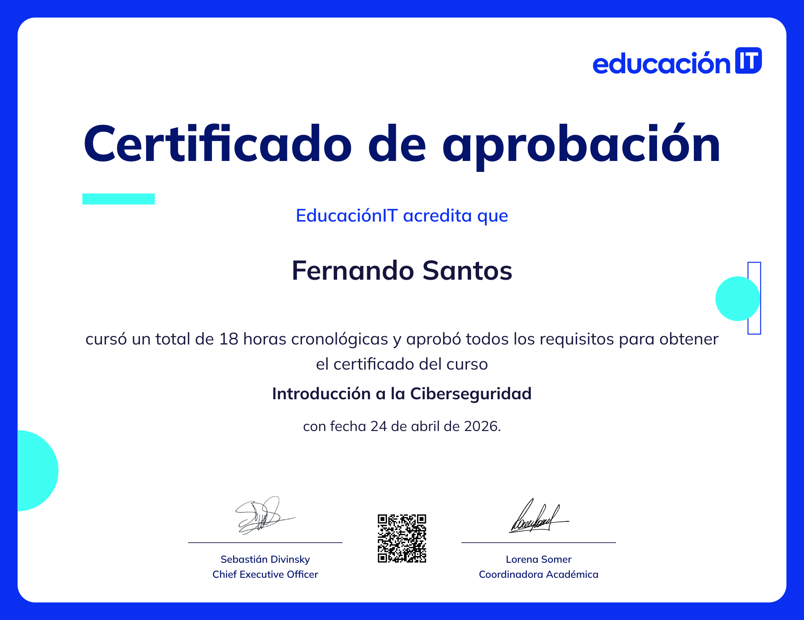

Fernando Santos
Experiencia Profesional
Analista de Sistemas & Monitoreo
Me encargo de monitoriar la infraestructura crítica gubernamental y de dar respuesta ante incidentes de red.
SOC Analyst / Analista de Seguridad
Implementación de políticas de seguridad, hardening de sistemas internos y control de accesos. Análisis de vulnerabilidades en infraestructura y resguardo de integridad de datos.
Centro de Monitoreo SOC (Simulación SIEM)
Logs de Red Analizados
TRÁFICO EN VIVO
Infraestructura Crítica
FIREWALL: ACTIVE
Búnker de Certificados
> Acá van a ir mis certificaciones a medida que las voy teniendo durante mi formación en ciberseguridad.

Introducción a la Ciberseguridad
EducaciónIT • Aprobado el 24 de Abril de 2026

Ethical Hacking
Pentesting Tools & Mitigación OWASP

Sistemas de Información
Título Universitario de Grado Completado
Stack
Kali Linux
Debian
Python (Django)
SQL Server Sec
Pentesting Tools
JavaScript
HTML5 / CSS3
SIEM Monitoring